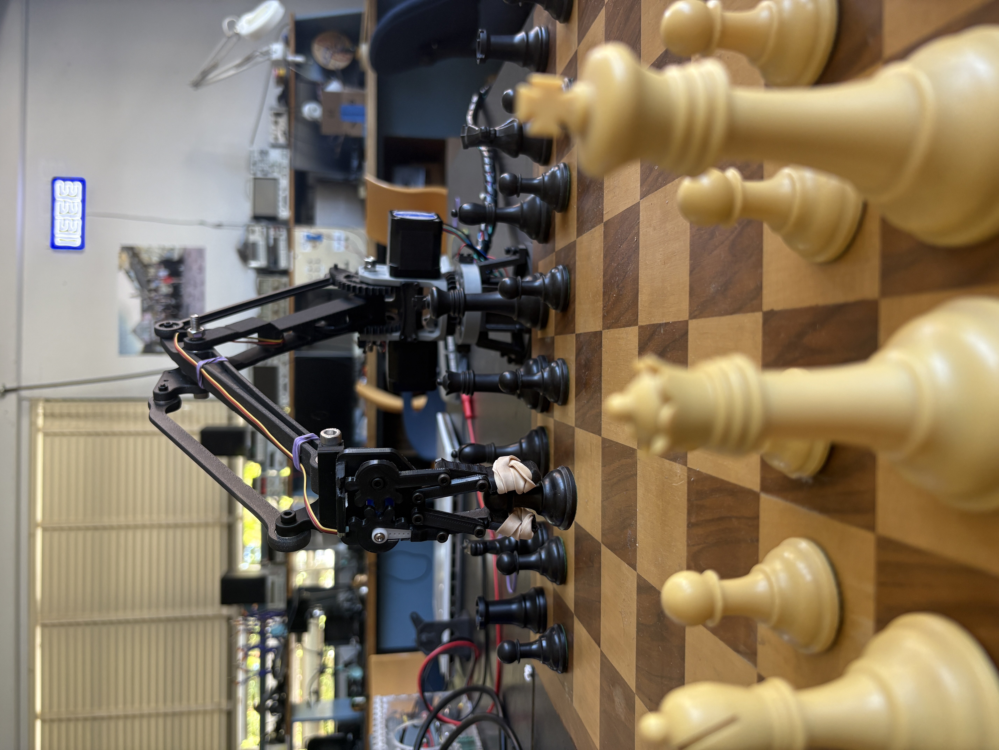
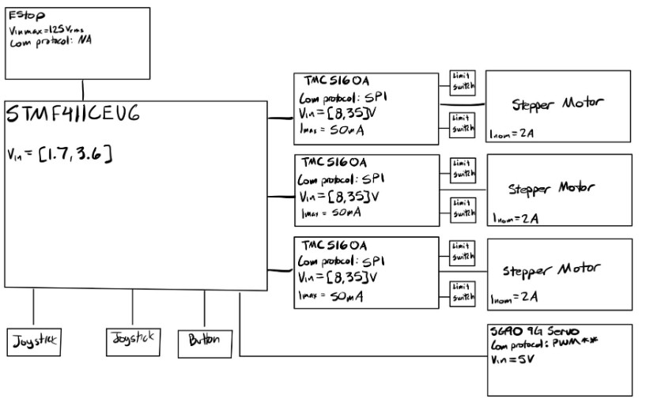
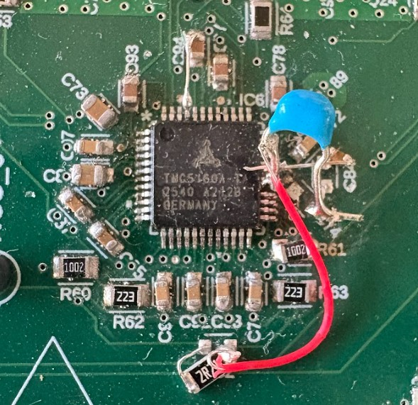

Loading...
Searching...
No Matches
Chess Robot Arm Documentation
Authors
Ivan Nieto
Reynaldo Farias
Project Overview
The chess robot arm is a three-axis electromechanical system designed to pick up chess pieces and be able to move them around a chess board. The robot is controlled through two joysticks that allow the user to position the arm in the X, Y, Z directions while operating a servo to grab the chess pieces and drop them. The system consists of three NEMA-17 stepper motors controlled by TMC5160A motion controllers, a servo gripper, an STM32F411 microcontroller, 3d printed materials, and a custom PCB.

Click image to watch the chess robot demo video on Youtube.
See the Chess Robot Calibration Demo on Youtube here .
System Architecture
The robot is made up of four primary subsystems:
-
Motion Control
- Three NEMA-17 stepper motors
- Three TMC5160A motion planners
- 3-axis movement / joints
-
Control
- Servo-actuated gripper to pick up and place chess pieces
-
Electronic Control
- STM32F411 microcontroller
- Custom PCB
- SPI communication network
-
User Control/Interface
- Dual joystick control for X, Y, and Z movement
- Emergency stop
- Grab button
- Custom controller
- Serial Peripheral Interface (SPI)
SPI was one of the most useful parts of this project. The TMC5160 took a 40 bit datagram: the first 8 bits is the address, and the last 32 bits is the data. If a transaction asked to write to an address, the 0x80 would be added to the address. Otherwise, the normal address would be sent. To access different motion planners, 3 output pins on the STM32 were designated as chip select pins to signify which chip was being talked to.
- Serial Wire Debug (SWD)
To download a STM32 Cube IDE program onto the chip, SWD was used. 3.3 V, Gnd, SWD, SWDIO, NRST, SWCLOCK, TX, and RX were exposed from the STM32 and an STLink could be used not only for programming, but debugging and USART communication as well.
- Universal Synchronous Asynchronous Reciever-Transmitter (USART)
For debugging purposes, USART was used and allowed us to see the registers being updated on the motion planner chip. For the future, it'll also help us develop the coordinate system for the Raspberry PI to be able to send moves and allow the motion planner to make moves.
- Joysticks
To implement movement, each joystick is essentially two potentiometers connected to two ADCs. the ADC would read the voltage output by the potentiometer and, via SPI, the microcontroller would send a velocity command to the motion planner to execute. It would read the value every 84 clock cycles. Some deadzone was introduced to prevent the joystick from sending a command to the motion planner on accident.
- Buttons
The Estop and user buttons were routed as external interrupts in which, if clicked, the program would go through the interrupt sequence, whether that was to stop all motors or to close a servo for example, then continue the main program.
- Servo
The servo pin was set up as a PWM pin based on our 8 MHz clock. The auto reload register was set to 40000, giving a frequency of 200 hz. The pulse would then be determined by experimentation of how open and how closed we would like the servo.
PCB Design

PCB with connected wiring.

Hardware Block Diagram.
In terms of power, the PCB was required to handle three voltage rails at 24 V, 5 V, and 3.3 V. The 24 V rail had to be specced for 6.15 A, the 5 V rail 5 A, and the 3.3 V rail 300 mA. As such, a 25W Buck converter, the TPS5450DDAR, was selected from 24 V to 5 V conversion. From there, the NCP164CSN, 5 V - 3.3 V 1W LDO was selected. Unfortunately during testing, the buck converter shorted itself and so the board is currently working off two power supplies.
For the logic, the STM32F411CEU6 microcontroller was utilized and programmed via its exposed SWD header. It serves as the controller to communicate via one SPI line to each motion planner. SPI test points were exposed for board bring up debugging. There was no particular strategy for routing except for the crystal which was routed with as short of traces as possible.
For stepper motor control, TMC5160A motion planners were used. Each circuit was identically routed with the exception of the no chip select and the diagnosis lines. The h-bridges received the most space, taking up the most space to ensure that the 2A of current would not heat up the board. The TMC5160A allowed for limit switch connections, which were routed around the h-bridge circuitry and extra lowpass components were added near the limit switch pins to minimize noise in the line.
In general, this was a four layer PCB, with the first layer a signal plane, the second layer a solid ground plane with a small rift between the buck converter and the rest of the board to be able to minimize the buck converter switching noise from messing with the rest of the circuit, the third layer a power plane, and a fourth layer another signal plane. Any path demanding a significant amount of current got its respective plane with a width larger than calculated from Digikey’s trace width calculator. All decoupling capacitors were placed as close as possible to the chip.
Overall debugging
One of the biggest issues with this project was the overall board bring up. I soldered or reflowed all components by hand. My thought process was to solder all STM32 related components first, test it, then reflow the rest of the board.
When bringing up STM32, when plugging into 3.3 V, there was no current draw. I plugged in the debugger but it couldn't find the chip. After various debugging steps, I realized I labeled one of my pins wrong and needed to boot the chip in under reset mode and I was able to download a “blink an LED” program onto the chip with still 0mA of current draw.

Motion Planner Rework
After reflowing the entire board, I noticed that my Z-axis motion planner chip was mis-aligned, and after heat gunning and messing with it too many times, I ripped out three traces. Using 32 gauge wire and a through hole capacitor, I was able to connect the right pads and later the Z-axis worked just fine.
Lastly, after a full reflow, the board would hit the current limit, up to 200 mA. I probed and removed a lot of components, spending easily 6 hours trying to figure out the source of the short (even though the resistance between the 24 V line and ground was around 1k ohms). It turned out, I bought the wrong buck converter with a different pin out and ended up causing unknown behavior. This fried my LDO and made me think that the LDO was the original cause. After ordering the right chip, the board fully worked. After some testing however, the servo was drawing too much current and caused the input to the buck converter to short with the switch node. Currently, the board needs a 24 V power supply and a 5V power supply to work.
One of the most significant lessons learned during the project was the importance of accounting for manufacturing tolerances when designing. All 3d printed materials were printed using PLA and through a Prusa Core One. Although we were able to print everything with phenomenal quality, tolerance was one thing we struggled with time and again. For example, there are two gears in the middle of the robot on each left and right motor. Looking at them very closely, it is obvious that they are not straight and are warped. Most likely this is due to the threaded screw passing through each gear and through the entire arm. Another example would be the 3d printed housing for the servo gripper. There was not enough room for the servo gripper to rotate the “fingers” of the robot, so we had to cut a piece off from the housing to allow for clearance.
Another struggle we ran into was picking up the chess pieces with the servo grippers. Initially the servo grippers were accidentally letting the chess pieces slip out of its grip. To overcome this, we used multiple rubber bands and wrapped them around each finger to increase the friction and grip of the “hand”.
Another lesson learned was in the controller design. There were a couple of tolerance mistakes that made it difficult for the inserts to be put in and the button installation for the estop. In addition, the controller design is large and unergonomic for someone with smaller-average sized hands. In the future, we plan to redesign the controller for a more ergonomic and smaller design.
Future Work
The system was complete and was successfully able to carry and place a chess piece, controlled by the user, with no errors or implications. In addition to this, it was successfully demonstrated during the “Mechatronics Demonstration Day” class activity.
Although we were able to complete our goal, we want to further advance our robot by making it autonomous. To accomplish this, a Raspberry Pi will be used to import a way for the camera to see the chess moves live, using inverse kinematics, and be able to move pieces on its own using Stockfish, which is the most popular, strongest open source chess engine available. Hopefully in due time, the robot will be able to make moves on its own, have multiple difficulty levels, and even a “voice” to promote banter and common chess threats.
A list of potential future improvements include:
- Automatic chess move generation through Stockfish
- Computer vision for board state recognition
- A “voice” using a speaker
- Multiple difficulties
- A “hint” button
- Smaller/More ergonomic controller